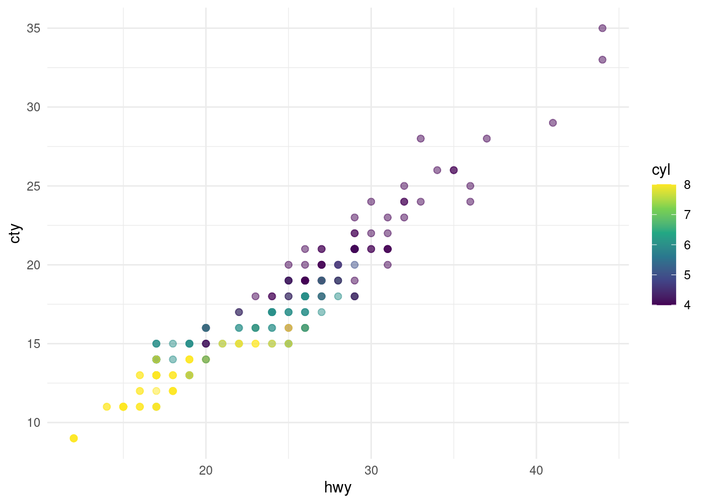
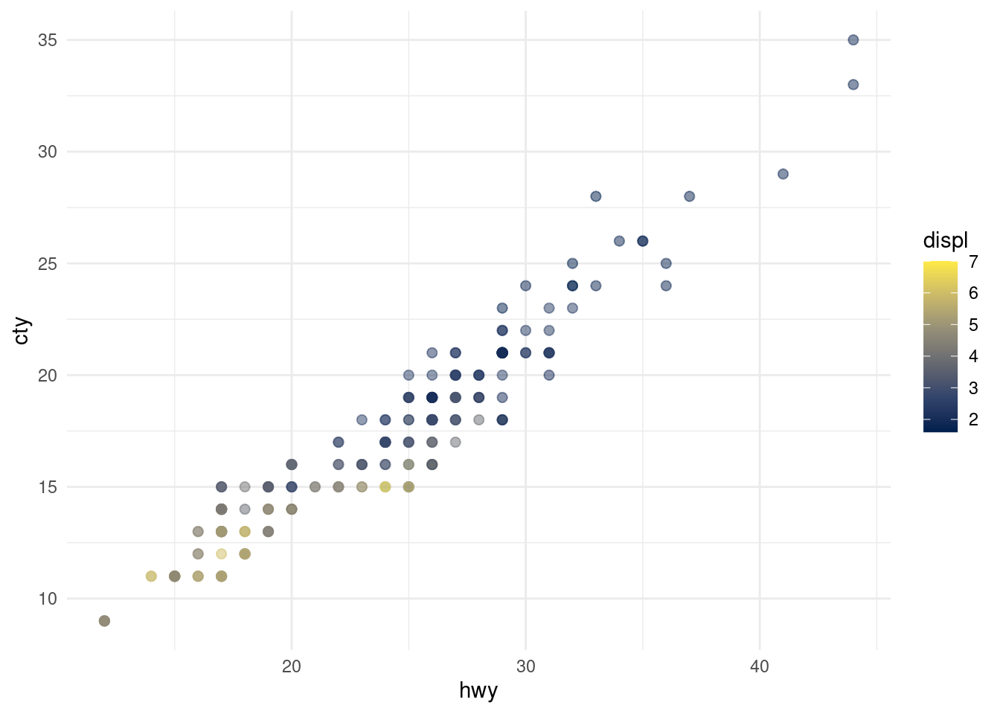

Quarto Computations
This dataset contains a subset of the fuel economy data from the EPA. Specifically, we use the mpg dataset from the ggplot2 package.
Here is the cars data:
mpgTable 1: The cars data
Note
There are some graphs coming.
ggplot(mpg, aes(x = hwy, y = cty, color = cyl)) +
geom_point(alpha = 0.5, size = 2) +
scale_color_viridis_c() +
theme_minimal()
ggplot(mpg, aes(x = hwy, y = cty, color = displ)) +
geom_point(alpha = 0.5, size = 2) +
scale_color_viridis_c(option = "E") +
theme_minimal()

The plots in Figure 1 show the relationship between city and highway mileage for 38 popular models of cars. The original dataset is shown in Table 1. In Figure 1 (a) the points are coloured by the number of cylinders while in Figure 1 (b) the points are coloured by engine displacement.